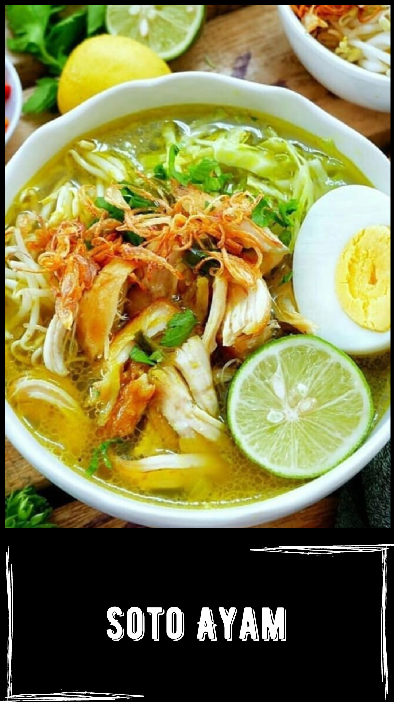

Resep:
- Didihkan air, rebus ayam dengan api kecil hingga daging ayam hampir lunak.
- Tumis bumbu halus bersama daun jeruk, daun salam, serai dan aduk hingga matang dan harum. Angkat.
- Masukkan ke dalam rebusan ayam.
- Rebus dengan api kecil hingga daging ayam lunak.
- Angkat ayam, tiriskan hingga agak kering.
- Goreng ayam sebentar hingga bagian luarnya kering. Tiriskan.
- Suwir daging ayam kasar-kasar.
- Susun ayam, suun, tauge dalam mangkuk saji.
- Tuangi kaldu panas.
- Sajikan dengan daun bawang, bawang goreng, sambal rawit dan jeruk nipis.